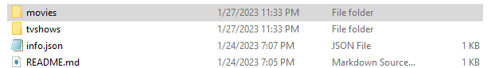
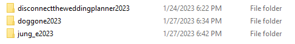
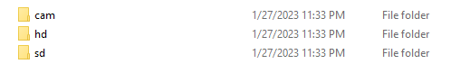
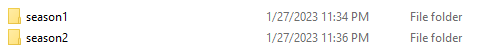
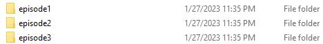
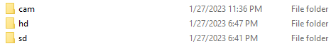
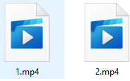

Easy one please head on over to the ipfs.tech website and download the IPFS Desktop software if you
haven't already!
Download our Template File Structure from right here!
Also you can download our File Structure Generator Tool here
Which can and will help you create the folder directorys just by filling out the forum boxs in the gui
Then Please make sure you get familiar with how we require the video files to be structured in a folder
for example look at this image below
This is the Root Folder you should have from Downloading
our Template File!
This Is Inside the root of the Folder below
 This is inside the Root Folder you should have from
Downloading our Template File!
This is the inside of the Movie Folder
 The name is determined by the movie name and release
year but removes illegale characters such as Space characters / slashes etc.. but keeps _ characters as
they are URL valid characters while also removing Uppercase Characters and replacing with lowercase
characters!
This is the inside of one of those movies listed above!

This is the inside of the Tv Show Folder below
This is the inside of the example tv show folder below

This is the inside of the tv shows season1 folder below

This is the inside of the tv shows episode1 folder below

This is the inside of the tv shows episode1 hd folder below

Last but not least Please read the Read.me inside the template file as it will contain some information
on how to update the info.json file properly each time you modify the folder and files
Also unlike onedrive where the files are symbolicly linked ipfs desktop when you add a folder or file to
it tends to make its own copy so you might want to familiarize yourself with there command line
application written in Go / Kubo if you dont want duplicates on your hdd as you can make a Symbolic link
that way with the command line interface!
Just have to make sure to publish each time you update the files if you use the Command line route if
not you will have to delete the old folder and reupload the new folder which its recommended to upload the
new folder and allow 1 day to go by before deleting the old folder to allow access until the publish gets
updated on the ipfs servers
How to use our File Structure Generator Software Tool!
Minimize
Im assuming you done downloaded the tool alright now please open a command prompt in the directory where
the Java tool is located!
or you can double click it if you have changed the file properties to make it executable if not just
open command prompt in the file directory where our Tool is located at!
then you will type in the command prompt java -jar ourtool.jar
Then a graphical interface will come up you will select where your Root Folder directory is that you are
sharing to the IPFS desktop Software! AKA where you will be storing all the movies on your computer in our
File structure!
fill out the information and hit the submit button and it will generate all the folder structures needed
then you move your mp4 video files into the proper folders based on quality of the mp4 and based on what
season and episode if its a tv show! if you have more then 1 video file for that episode in the same
quality please use numerical ordering starting from 1 and counting up!
Simpler way of creating a Mutable File system is running this command if you installed the Kubo Command
line interface for ipfs along with the desktop installation!
Execute this command V
ipfs files write /root [path to your (movies and tvshows/Template file you downloaded/root folder
generated by our File Structure Generator Java Application!)root folder (Not the actual root folder for
those of u on linux or mac talking about the root folder of the tv shows and movies!) on your computer
which should be called root i understand how this can be confusing!]
Then open up IPFS Desktop and go to Files!
you should see the root folder click the three dots next to it on the far right!
select Publish to IPNS and make sure to use the same key when publishing either it be the default self
key etc..
Or follow along these image tutorials to update your public file repo and get your ipns url if you
havent generated it yet! following the traditional IPFS file scheme!
First you will need to Add the New Folder using the IPFS Desktop app under Files Click +Import
you will import the root folder! and then right click the three dots next to the newly imported root
folder if you are updating! and select publish to IPNS make sure to use the same signing key so you keep
the same IPNS CID so streaming website can always keep up with your movie and tv show files and allow
users to stream from them!
Also please take the time to enjoy the fact that you dont have to constantly re upload everytime video
gets taken down by copyright flag etc.. since there is no moderation over the ipfs network as its not
meant to be moderated!
Please Note you will have to run the IPFS Desktop app atleast 1 time a day every 24 hours to ensure the
files stay public over ipns if not they will be be made available publicly next time you bring the IPFS
Desktop app online!
This is due to how the IPFS Service works requires atleast communication once every 24 hours to
republish as it uses a 24 hour certificate system to make the ipns available across multiple gateways such
as dweb.link and ipfs.io etc..